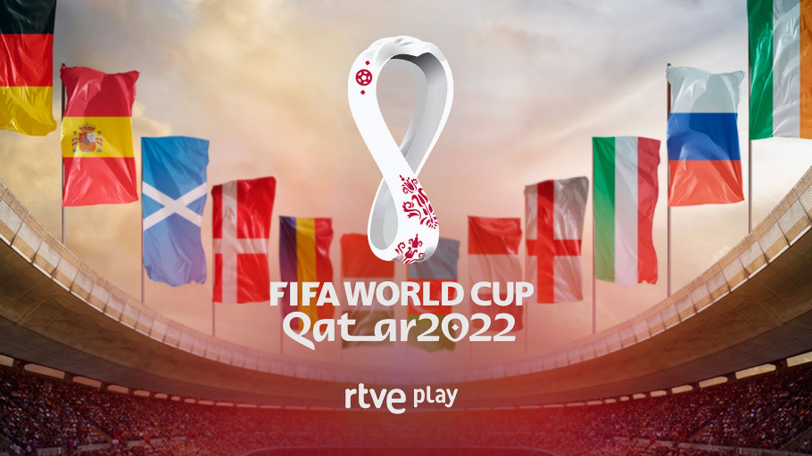

Descubriremos todos los datos importantes sobre el mundial de Fútbol

¿Cómo se creo todo esto?
Primer torneo: Se celebró en Uruguay en 1930, con 13 equipos participantes.
Participación de 13 equipos: Solo participaron 13 países, ya que muchos europeos no pudieron viajar por dificultades económicas. Los equipos fueron Uruguay, Argentina, Brasil, Chile, México, Estados Unidos, Yugoslavia, Bélgica, Francia, Rumania, Perú, Bolivia y Paraguay.
Trofeo original: El trofeo original se llamó "La Copa Jules Rimet", en honor al presidente de la FIFA. Fue entregado al campeón del torneo hasta 1970, cuando Brasil lo ganó por tercera vez y lo retuvo permanentemente.
Primer gol del Mundial: El primer gol en la historia de los Mundiales fue anotado por el delantero argentino Guillermo Stábile en la victoria de su equipo contra México.
Formato de torneo: En 1930, el torneo no tenía la estructura de eliminatorias modernas. Se jugó en una fase de grupos, seguida de semifinales y final, con 4 grupos de equipos compitiendo entre sí.
Video del primer mundial
¿Quieres saber mas sobre el mundial y como surgio todo?
Para mas información sobre esto visia la página web que dejamos el enlace para que le heches un vistazo: